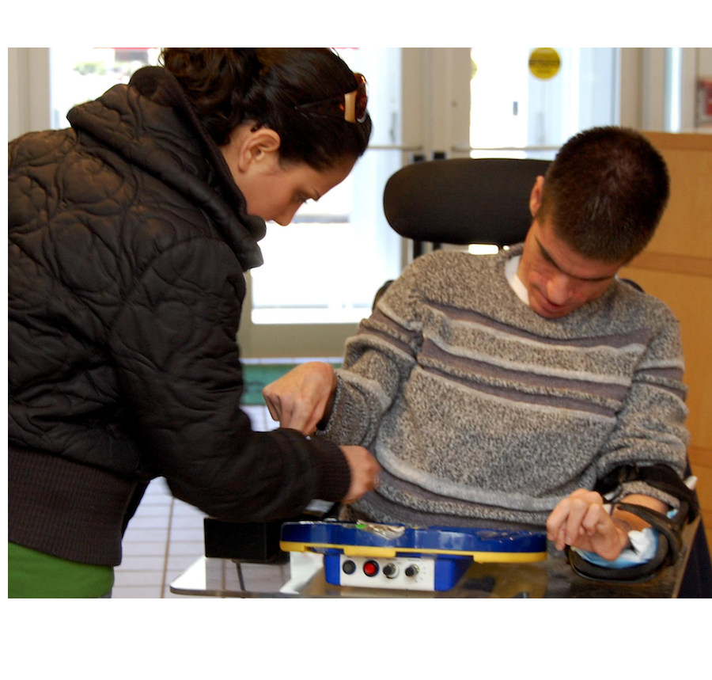

Offered through Direct Course, the College of Employment Services (CES) curriculum can help your staff advance their careers as employment professionals. Now they can access even more intensive career development, through the CES ACRE Supplement offered by the Institute for Community at the University of Massachusetts Boston.
Apply Now
"Thank you very much for providing this opportunity to learn more in the field of employment services. I look forward to taking things I’ve learned from your training and applying to my own job seeker/worker situations."- Karin
"Thank you very much! It was a pleasure to take it, very informative and great tools to use!!"- Sara
"It was truly a pleasure to work with you and your team. I thought that this course was very informative."- Scott
CES is a suite of online courses that train employment professionals in best practices for supporting people with disabilities to build fulfilling careers. ACRE is a national membership organization that reviews and approves curriculum. Individuals completing ACRE-approved training receive a nationally recognized certificate. The ACRE certificate can be acquired after a learner completes a 2-part training series. CES ACRE Supplement is an ACRE-approved curriculum. Those who receive the ACRE certificate are listed on the ACRE Certificate Registry.
This portion of the training series is contracted directly through Elsevier. Contact Olivia Sullivan to register at o.sullivan@elsevier.com.
This portion of the training is contracted directly through the Institute for Community Inclusion (ICI) at UMass Boston. Registration information and link is at the bottom of this page.
They complete the ACRE supplement course. This includes:
The ACRE Supplement (Part 2) costs $225 per learner. ICI instructors review and provide feedback on all fieldwork assignments and are available to support Supplement learners. CES online courses (Part 1) is paid for separately through Elsevier, see registration info above. Questions should be directed to Lara Enein-Donovan at lara.eneindonovan@umb.edu
No, you do not have to finish all the CES courses first, unless required by your course administrator. You can work on the CES courses and the CES ACRE Supplement simultaneously. Due to personal time constraints, most learners choose to complete all the CES courses first, and then spend time on the CES ACRE Supplement work.
No, that is not correct. You must complete all 11 of the required CES courses and also complete all the activities on the CES ACRE Supplement, to get an ACRE certificate.
The transcripts provide proof to CES ACRE Supplement staff members that you completed all 11 of the required CES courses. Our staffers are not able to get your transcripts themselves. Only you (the learner) or your site administrator can access these transcripts.
The College of Employment Services (CES) and the CES ACRE Supplement are two separate programs that work collaboratively to provide the ACRE certificate to learners. As such, each program operates its on web-based learning platform, each with a separate website and user profile.
Learners are able to pay a fee to the College of Employment Services (CES) and just complete the courses they have paid for to enhance their professional development. There is no requirement for them to proceed any further with their education.
If the learner decides that they do want to continue with their education and get an ACRE certificate, they need to register and pay the additional fee for the CES ACRE Supplement.
To learn more about CES courses, sign up for a free demo at http://directcourseonline.com/employment-services/
You can download a copy of the syllabus.
On average, it takes a learner about 8 hours to complete all the activities.
Frequently Asked Questions: http://directcourseonline.com/frequently-asked-questions/
Contact information: http://directcourseonline.com/contact/
An ACRE certificate is given to learners who successfully completed the approved 40 hours or more of training and professional development activities in the field of employment services for individuals with disabilities. This certificate never expires. In addition those who have received an ACRE certificate will also have their name added to the ACRE registry. A public database on their website that names all the learners who have completed the required ACRE approved training. For more information go to http://acreducators.org/